Candidate List 20260617 Previous Day Next Day Section 1: New Sources (age<1d) Cosmological Afterglow
Section 2: Old (1-5d) sources observed last night placeholder
Section 1: New Afterglow/FBOT Cands Last Night (4)
1. ZTF26abcijaw (Afterglow?) [Back to Top] [Share] [Trigger Swift] [Fritz ] [Lasair ]RA, Dec: 220.52817, -0.14994 14h42m6.76s, 0d-8m-59.79sGalactic (l, b): 351.75602, 51.90787 ext(g-r) = 0.042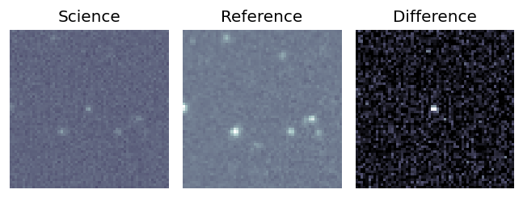
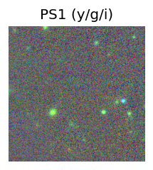
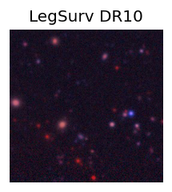
LegacySurvey: 1 sources in 3 arcsec Closest: d = 7.41 arcsec, 108.8 deg (east of north) photoz=0.99 (68% bounds 0.88, 1.12), type=REX peak abs mag = -24.51 (68% bounds -24.21, -24.84) 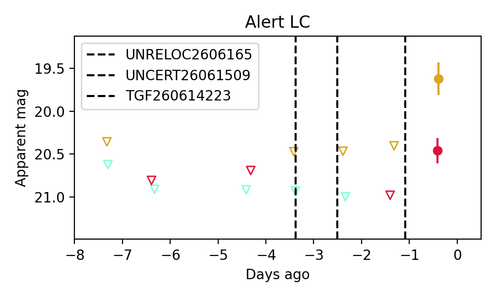
Consistent with synchrotron, g-r>0!
2. ZTF26abcikpg (Afterglow?) [Back to Top] [Share] [Trigger Swift] [Fritz ] [Lasair ]RA, Dec: 221.73498, 11.08691 14h46m56.40s, 11d 5m12.88sGalactic (l, b): 7.96014, 58.48205 ext(g-r) = 0.032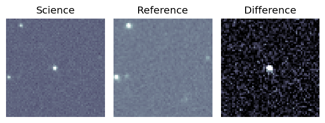
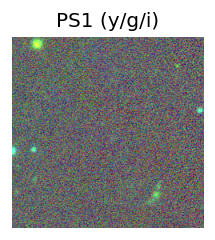
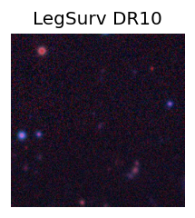
LegacySurvey: 1 sources in 3 arcsec Closest: d = 2.53 arcsec, 201.9 deg (east of north) photoz=0.91 (68% bounds 0.75, 1.09), type=EXP peak abs mag = -25.51 (68% bounds -24.99, -25.99) 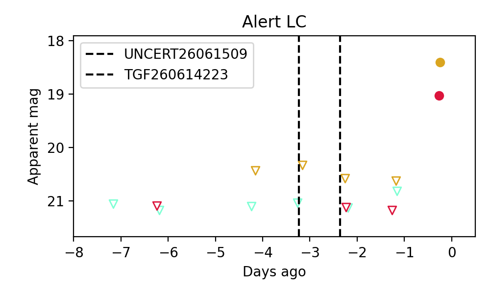
Consistent with synchrotron, g-r>0!
3. ZTF26abciybn (FBOT?) [Back to Top] [Share] [Trigger Swift] [Fritz ] [Lasair ]RA, Dec: 231.42011, 30.05182 15h25m40.83s, 30d 3m6.56sGalactic (l, b): 47.18571, 56.17308 ext(g-r) = 0.023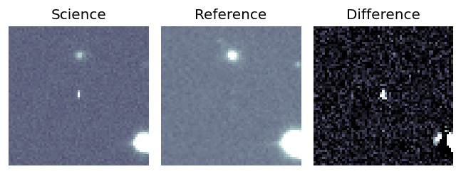
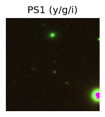
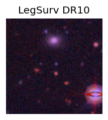
LegacySurvey: 1 sources in 3 arcsec Closest: d = 2.09 arcsec, 316.2 deg (east of north) photoz=0.38 (68% bounds 0.27, 0.52), type=REX peak abs mag = -22.98 (68% bounds -22.13, -23.77) 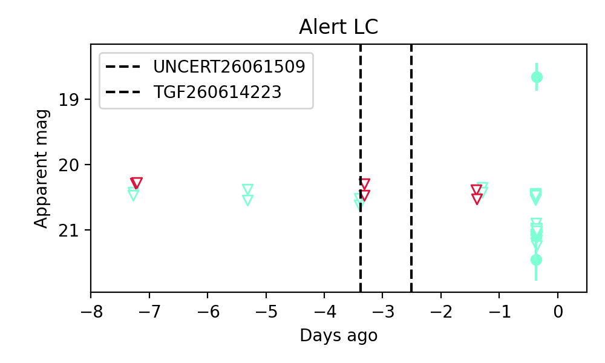
4. ZTF26abcjhzj (Afterglow?) [Back to Top] [Share] [Trigger Swift] [Fritz ] [Lasair ]RA, Dec: 240.78996, 55.76653 16h 3m9.59s, 55d45m59.52sGalactic (l, b): 86.41021, 45.43504 ext(g-r) = 0.011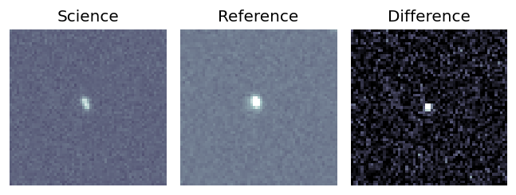
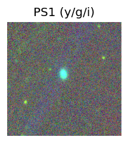
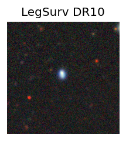
peak abs mag = -18.14 peak abs mag = -18.17 peak abs mag = -18.17 LegacySurvey: 1 sources in 3 arcsec Closest: d = 2.40 arcsec, 17.1 deg (east of north) photoz=0.1 (68% bounds 0.08, 0.12), type=SER peak abs mag = -18.58 (68% bounds -17.95, -19.01) 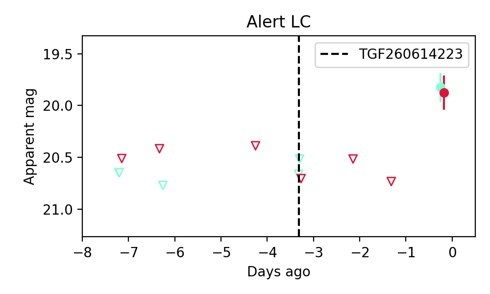
Consistent with synchrotron, g-r>0!
Section 2: Older Sources Observed Last Night (18)
0. ZTF26abauikj (Afterglow?FBOT?) [Back to Top] [Share] [Trigger Swift] [Fritz ] [Lasair ]RA, Dec: 151.07413, 10.79127 10h 4m17.79s, 10d47m28.58sGalactic (l, b): 227.27394, 47.49814 WARNING: -0.99 deg from ecliptic plane ext(g-r) = 0.038LegacySurvey: 1 sources in 3 arcsec Closest: d = 1.93 arcsec, 171.2 deg (east of north) photoz=0.43 (68% bounds 0.08, 0.71), type=EXP peak abs mag = -24.17 (68% bounds -20.16, -25.47)
1. ZTF26abbbvgs (FBOT?) [Back to Top] [Share] [Trigger Swift] [Fritz ] [Lasair ]RA, Dec: 204.89798, -0.4319 13h39m35.52s, 0d-25m-54.83sGalactic (l, b): 327.67021, 60.10649 ext(g-r) = 0.035peak abs mag = -19.65 peak abs mag = -19.45 LegacySurvey: 1 sources in 3 arcsec Closest: d = 1.79 arcsec, 326.7 deg (east of north) photoz=0.17 (68% bounds 0.14, 0.19), type=SER peak abs mag = -19.68 (68% bounds -19.35, -19.99) Consistent with synchrotron, g-r>0!
2. ZTF26abbckmg (FBOT?) [Back to Top] [Share] [Trigger Swift] [Fritz ] [Lasair ]RA, Dec: 237.33017, -20.45185 15h49m19.24s, -20d-27m-6.67sGalactic (l, b): 349.75627, 25.83242 WARNING: -0.39 deg from ecliptic plane ext(g-r) = 0.205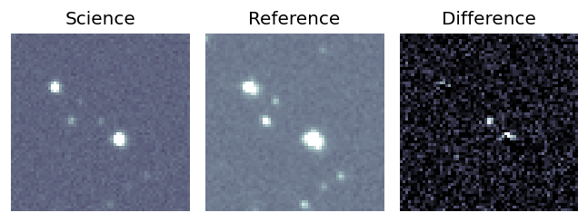
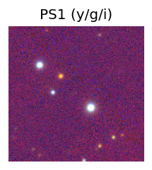
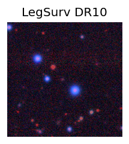
LegacySurvey: 1 sources in 3 arcsec Closest: d = 1.26 arcsec, 98.2 deg (east of north) photoz=0.81 (68% bounds 0.62, 1.19), type=REX peak abs mag = -24.97 (68% bounds -24.27, -26.02) 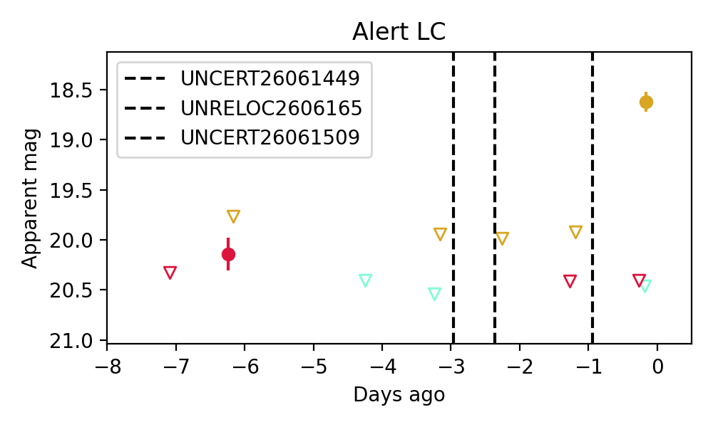
3. ZTF26abbjayz (Afterglow?) [Back to Top] [Share] [Trigger Swift] [Fritz ] [Lasair ]RA, Dec: 280.52866, -11.28661 18h42m6.88s, -11d-17m-11.80sGalactic (l, b): 21.82445, -3.08106 ext(g-r) = 0.84
4. ZTF26abbloxx (Afterglow?) [Back to Top] [Share] [Trigger Swift] [Fritz ] [Lasair ]RA, Dec: 228.94015, 2.94607 15h15m45.64s, 2d56m45.85sGalactic (l, b): 4.21005, 47.88184 ext(g-r) = 0.051peak abs mag = -19.10 LegacySurvey: 1 sources in 3 arcsec Closest: d = 2.99 arcsec, 56.1 deg (east of north) photoz=1.28 (68% bounds 0.2, 2.44), type=DEV peak abs mag = -25.16 (68% bounds -20.32, -26.88) Consistent with synchrotron, g-r>0!
5. ZTF26abblqfy (Afterglow?) [Back to Top] [Share] [Trigger Swift] [Fritz ] [Lasair ]RA, Dec: 243.79434, 42.68999 16h15m10.64s, 42d41m23.96sGalactic (l, b): 67.43099, 46.17283 ext(g-r) = 0.017peak abs mag = -17.96 peak abs mag = -17.96 LegacySurvey: 1 sources in 3 arcsec Closest: d = 5.65 arcsec, 69.1 deg (east of north) photoz=0.05 (68% bounds 0.04, 0.06), type=SER peak abs mag = -17.47 (68% bounds -16.87, -18.0) Consistent with synchrotron, g-r>0!
6. ZTF26abbzggr (Afterglow?) [Back to Top] [Share] [Trigger Swift] [Fritz ] [Lasair ]RA, Dec: 268.15843, 64.92043 17h52m38.02s, 64d55m13.56sGalactic (l, b): 94.49238, 30.57922 ext(g-r) = 0.037peak abs mag = -19.09 peak abs mag = -19.05 peak abs mag = -19.05 LegacySurvey: 1 sources in 3 arcsec Closest: d = 2.16 arcsec, 315.1 deg (east of north) photoz=0.02 (68% bounds 0.01, 0.04), type=SER peak abs mag = -15.22 (68% bounds -14.02, -16.63) Consistent with synchrotron, g-r>0!
7. ZTF26abbzilh (FBOT?) [Back to Top] [Share] [Trigger Swift] [Fritz ] [Lasair ]RA, Dec: 264.4375, 21.11373 17h37m45.00s, 21d 6m49.43sGalactic (l, b): 44.81065, 25.25334 ext(g-r) = 0.097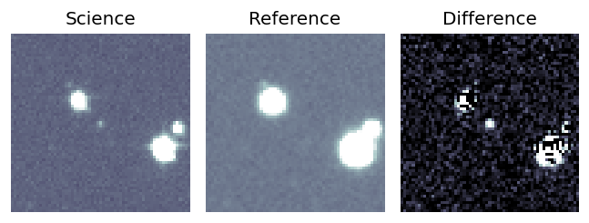
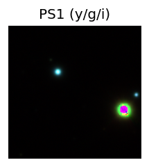
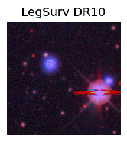
peak abs mag = -20.48 LegacySurvey: 1 sources in 3 arcsec Closest: d = 0.21 arcsec, 135.5 deg (east of north) photoz=0.57 (68% bounds 0.4, 0.71), type=REX peak abs mag = -22.92 (68% bounds -21.98, -23.49) 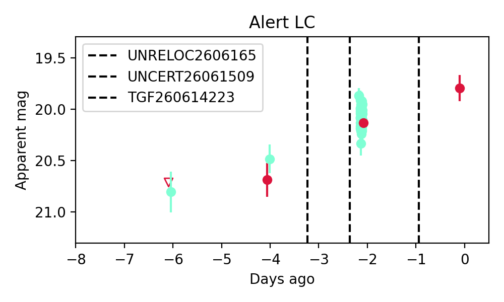
Consistent with synchrotron, g-r>0!
8. ZTF26abcaswg (FBOT?) [Back to Top] [Share] [Trigger Swift] [Fritz ] [Lasair ]RA, Dec: 289.02185, 34.39832 19h16m5.24s, 34d23m53.95sGalactic (l, b): 66.4414, 10.29838 ext(g-r) = 0.157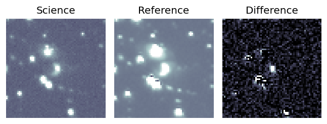
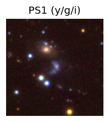
PS1: 1 source in 3 arcsec Closest: d = 0.89 arcsec photoz=0.21+/-0.03 peak abs mag = -21.40 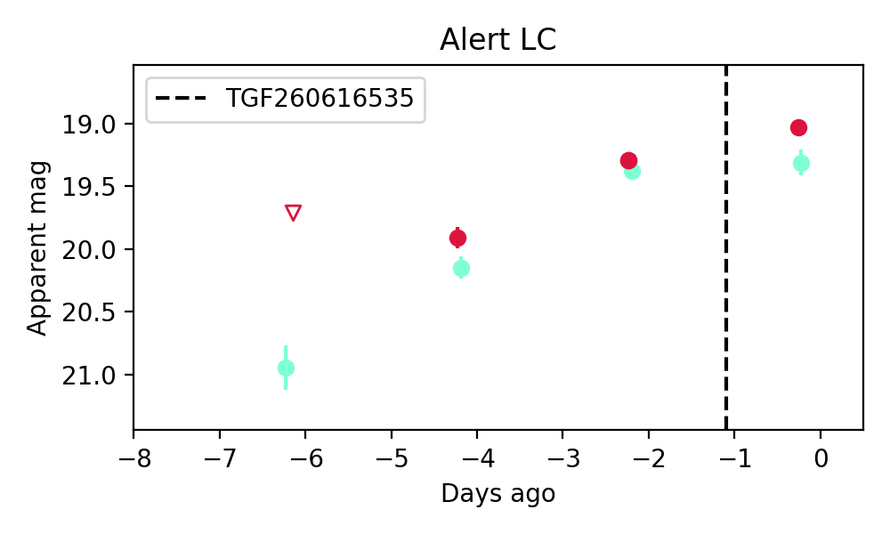
Consistent with synchrotron, g-r>0!
9. ZTF26abcbqux (FBOT?) [Back to Top] [Share] [Trigger Swift] [Fritz ] [Lasair ]RA, Dec: 350.42573, -6.14165 23h21m42.17s, -6d-8m-29.93sGalactic (l, b): 73.41274, -60.07713 WARNING: -1.86 deg from ecliptic plane ext(g-r) = 0.052peak abs mag = -20.23 LegacySurvey: 1 sources in 3 arcsec Closest: d = 1.22 arcsec, 172.9 deg (east of north) photoz=0.2 (68% bounds 0.16, 0.23), type=SER peak abs mag = -20.58 (68% bounds -20.15, -21.02)
10. ZTF26abceqdp (Afterglow?) [Back to Top] [Share] [Trigger Swift] [Fritz ] [Lasair ]RA, Dec: 217.87357, -11.38728 14h31m29.66s, -11d-23m-14.19sGalactic (l, b): 338.44746, 44.47558 WARNING: 3.34 deg from ecliptic plane ext(g-r) = 0.12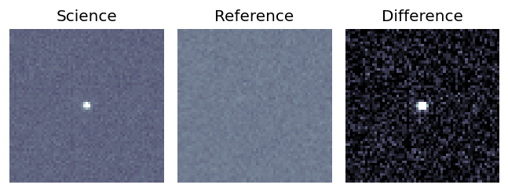
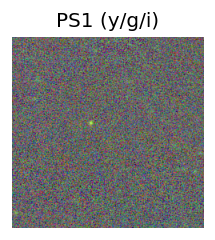
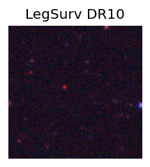
LegacySurvey: 1 sources in 3 arcsec Closest: d = 5.96 arcsec, 65.3 deg (east of north) photoz=0.65 (68% bounds 0.47, 0.87), type=PSF peak abs mag = -25.38 (68% bounds -24.58, -26.16) 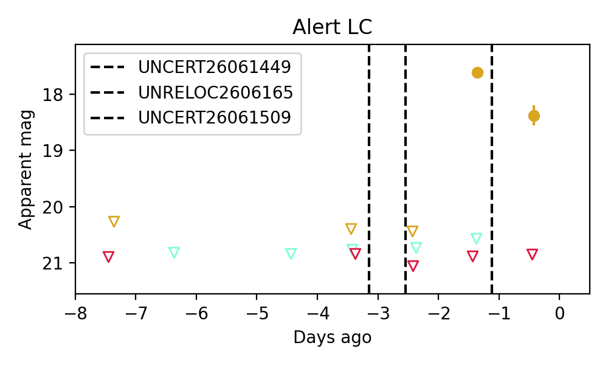
11. ZTF26abcfltk (FBOT?) [Back to Top] [Share] [Trigger Swift] [Fritz ] [Lasair ]RA, Dec: 263.4156, 4.37686 17h33m39.74s, 4d22m36.68sGalactic (l, b): 27.86131, 19.28074 ext(g-r) = 0.198PS1: 1 source in 3 arcsec Closest: d = 4.73 arcsec photoz=0.21+/-0.14 peak abs mag = -21.88
12. ZTF26abcibmm (Afterglow?) [Back to Top] [Share] [Trigger Swift] [Fritz ] [Lasair ]RA, Dec: 211.92718, -10.35667 14h 7m42.52s, -10d-21m-24.00sGalactic (l, b): 331.75739, 48.2002 WARNING: 2.41 deg from ecliptic plane ext(g-r) = 0.059peak abs mag = -18.33 LegacySurvey: 1 sources in 3 arcsec Closest: d = 1.33 arcsec, 343.2 deg (east of north) photoz=0.08 (68% bounds 0.07, 0.1), type=SER peak abs mag = -18.33 (68% bounds -18.08, -18.68) Consistent with synchrotron, g-r>0!
13. ZTF26abcitpo (FBOT?) [Back to Top] [Share] [Trigger Swift] [Fritz ] [Lasair ]RA, Dec: 227.11872, 31.02918 15h 8m28.49s, 31d 1m45.03sGalactic (l, b): 48.65747, 59.92443 ext(g-r) = 0.023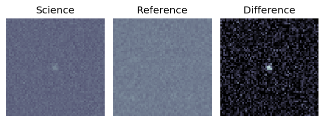
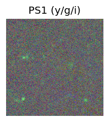
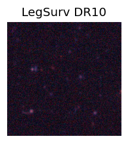
LegacySurvey: 1 sources in 3 arcsec Closest: d = 1.69 arcsec, 265.8 deg (east of north) photoz=0.96 (68% bounds 0.72, 1.13), type=REX peak abs mag = -23.78 (68% bounds -23.03, -24.23) 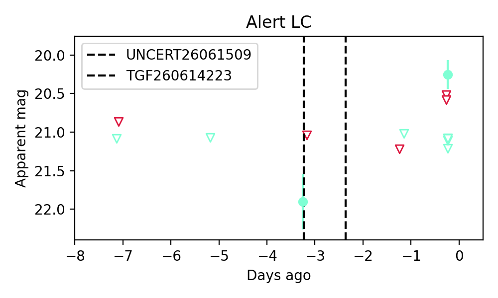
14. ZTF26abcjctn (Afterglow?FBOT?) [Back to Top] [Share] [Trigger Swift] [Fritz ] [Lasair ]RA, Dec: 244.3492, -18.29953 16h17m23.81s, -18d-17m-58.31sGalactic (l, b): 356.46833, 22.51708 WARNING: 3.0 deg from ecliptic plane ext(g-r) = 0.385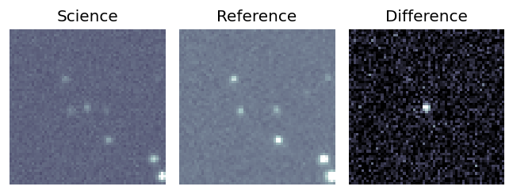
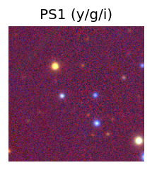
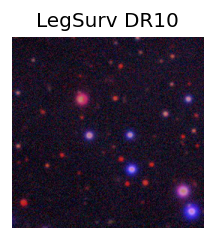
LegacySurvey: 1 sources in 3 arcsec Closest: d = 0.80 arcsec, 199.3 deg (east of north) photoz=0.95 (68% bounds 0.65, 1.18), type=REX peak abs mag = -25.68 (68% bounds -24.67, -26.27) 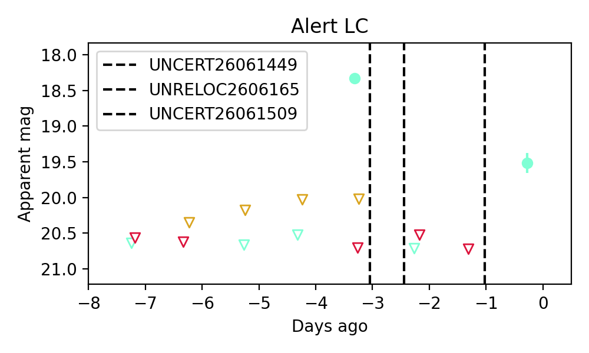
15. ZTF26abckdrl (Afterglow?) [Back to Top] [Share] [Trigger Swift] [Fritz ] [Lasair ]RA, Dec: 282.40847, 51.02186 18h49m38.03s, 51d 1m18.70sGalactic (l, b): 80.56334, 21.03156 ext(g-r) = 0.046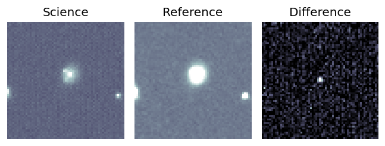
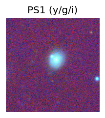
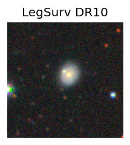
peak abs mag = -16.67 LegacySurvey: 1 sources in 3 arcsec Closest: d = 0.86 arcsec, 56.4 deg (east of north) photoz=0.06 (68% bounds 0.02, 0.09), type=SER peak abs mag = -16.96 (68% bounds -14.22, -17.88) 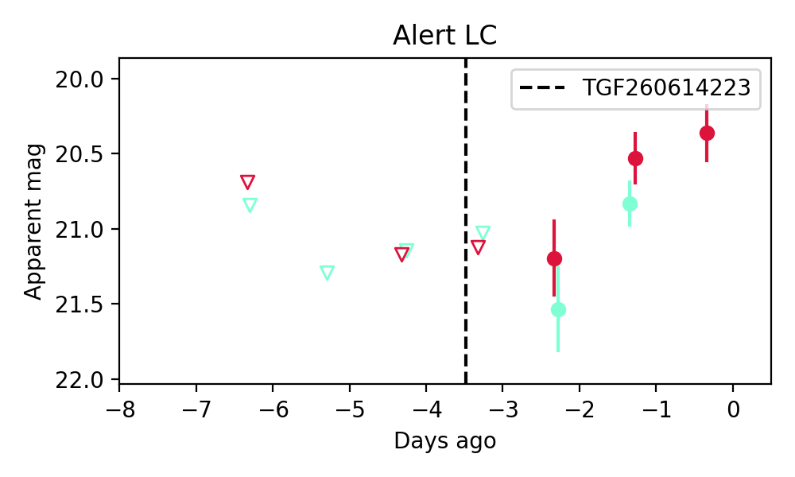
Consistent with synchrotron, g-r>0!
16. ZTF26abckjct (FBOT?) [Back to Top] [Share] [Trigger Swift] [Fritz ] [Lasair ]RA, Dec: 273.73092, 45.96666 18h14m55.42s, 45d57m59.97sGalactic (l, b): 73.59699, 25.21179 ext(g-r) = 0.035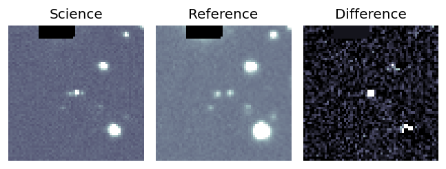
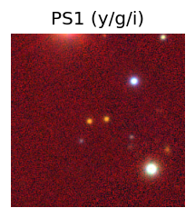
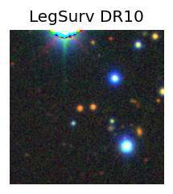
LegacySurvey: 1 sources in 3 arcsec Closest: d = 2.83 arcsec, 268.0 deg (east of north) photoz=0.1 (68% bounds 0.05, 0.3), type=PSF peak abs mag = -19.84 (68% bounds -18.26, -22.43) 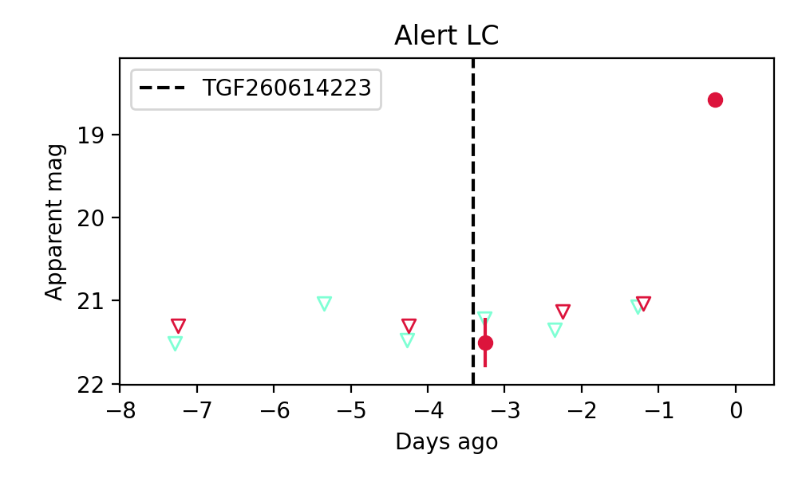
17. ZTF26abckjqt (Afterglow?) [Back to Top] [Share] [Trigger Swift] [Fritz ] [Lasair ]RA, Dec: 297.74793, 4.36231 19h50m59.50s, 4d21m44.33sGalactic (l, b): 43.77171, -11.14693 ext(g-r) = 0.186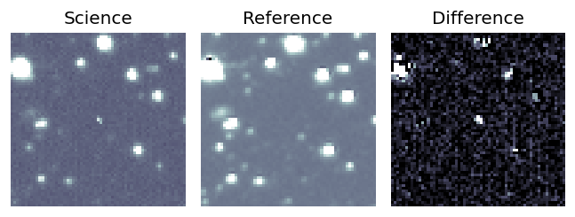
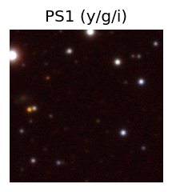
PS1: 1 source in 3 arcsec Closest: d = 7.73 arcsec photoz=0.19+/-0.11 peak abs mag = -21.06 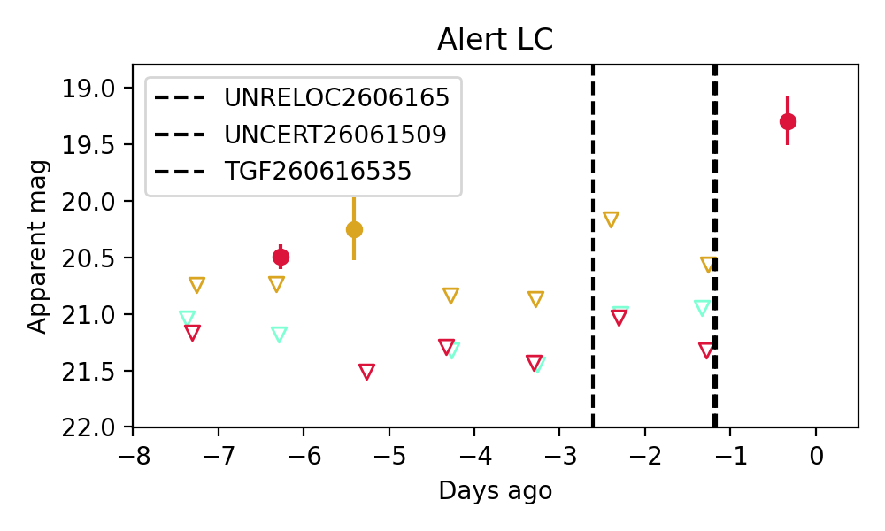